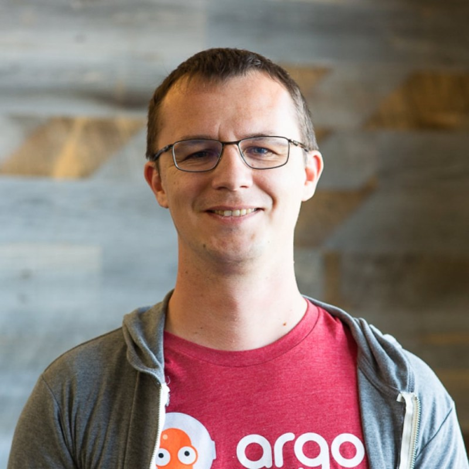

Co-creator of Argo CD · Co-founder at Akuity · Author
I co-created Argo CD back when GitOps wasn't even a word most people used. Didn't expect it to take off the way it did. Built Akuity on top of that — co-founded it with two partners to turn what the community built into something companies could rely on in production.

Core contributor and co-creator across the Argo project ecosystem — used by thousands of companies running Kubernetes in production.
Declarative GitOps continuous delivery for Kubernetes. CNCF graduated project and the industry standard for GitOps deployments.
Container-native workflow engine for Kubernetes. The most popular workflow execution engine in the cloud-native ecosystem.
Progressive delivery controller for Kubernetes. Supports blue/green, canary, and advanced rollout strategies with traffic management.
Configuration-driven notification library for cloud-native applications. Powers alerting in Argo CD and Argo Rollouts across Slack, Teams, PagerDuty and more.
Continuous Deployment with Argo CD, Jenkins X, and Flux. A comprehensive guide to implementing GitOps practices at scale, written from the perspective of the engineers who built the tools.
Read on Amazon →GitOps, platform engineering, and open-source — from the perspective of someone who built the tools.
Regular speaker at KubeCon, ArgoCon, and cloud-native events. Sharing what I learn building Argo and operating it at scale.
Building the enterprise GitOps platform on top of Argo CD and Kargo. Leading product architecture and engineering, customer production deployments, and the AI agent layer (Akuity Intelligence).
Core engineer on Argo CD and Argo Rollouts. Ran Argo CD as a service for hundreds of developers at Intuit, powering 1,000+ deployments daily. Led GitOps adoption company-wide.
Early engineer on what became the Argo project. Prototyped the lightweight workflow engine design that became Argo Workflows. Led Argo v1/v2 UI development.
Contributed to DoubleClick Data Platform (Google/EPAM), sales intelligence APIs (First Rain), and content management systems (Ooyala). Built engineering experience across Java, Go, and distributed systems.